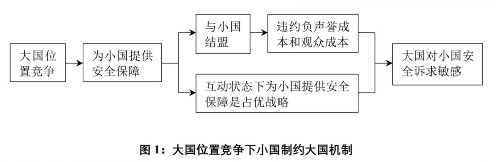
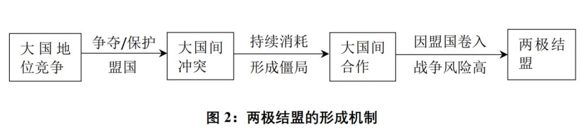

收录于合集

简 介
【 作者 】杨原（中国社会科学院世界经济与政治研究所副研究员）
【 来源 】杨原：《大国政治的喜剧——两极体系下超级大国彼此结盟之谜》 ， 《世界经济与政治》2019年第12期。
【 致谢 】作者感谢陈寒溪、陈玉聃、冯维江、贺凯、李隽阳、李巍、刘玮、苗中泉、蒲晓宇、漆海霞、齐皓、孙学峰、唐世平、徐进、阎学通、周方银、周建仁等学者的建议和帮助及匿名评审专家的意见，文责自负。
【 编辑 】国政学人
内容提要
国际体系中实力最强的两个国家最易出现冲突和战争，两极体系下两个一级大国会持续对抗，这是所有现实主义理论乃至大部分主流国际安全理论的基本共识。然而在古希腊城邦时期和中国春秋时期的两极体系中，却出现了两“极”彼此结盟这种最高程度的合作行为。现有的合作理论和联盟形成理论均难以解释这种“两极结盟”现象。为解释这种反常现象，本文提出了大国竞争的“权力大/小”悖论和广义“稳定/不稳定”悖论，并以此为基础，揭示了两极体系下大国从冲突到结盟的具体机制。两极体系下大国为竞争更高的权力地位，容易受小国牵连而陷入冲突和战争。如果这种冲突陷入了“消耗战”并形成僵局，停止对抗就将成为双方的共同选择。如果此时大国因小国而再次陷入双输性对抗的风险依然显著，那么以结盟这种方式向小国释放信号，表达无意因小国而继续对抗的决心从而规避进一步的损失，将成为两个大国的均衡选择。“两极结盟”研究有助于拓展学界对联盟起源、两极体系性质、大国权力竞争等重要理论议题的理解，也为中美冲突管控前景提供了新的思考视角。
【关键词】 大国权力竞争；古代国际关系；联盟理论；两极体系；修昔底德陷阱
 。
。
正 文
1
问题的提出
本文研究的问题是：为什么两极体系下两个存在激烈权力竞争的超级大国会与对方结盟？在古希腊城邦时期和中国春秋时期，都曾出现由两个大国主导整个体系的两极结构，[1]在这两个两极体系中，都曾出现过作为体系两“极”（poles）的两个一级大国彼此结盟的现象。公元前421年，雅典和斯巴达结束了为期十年的阿奇达姆斯战争（Archidamian War），签订《尼基阿斯和约》（The Peace of Nicias）和一个同盟条约。[2]盟约明确规定，如果有敌人侵犯两国中的任何一国，另一国应“以最有效的方式”援助对方。[3]公元前579年和546年，晋楚两国在经历了80多年的对抗和多次战争后，先后两次召开“弭兵之会”，签订了“若有害楚，则晋伐之；在晋，楚亦如之”的互助性盟约，并确定了“晋国的属国须向楚国朝觐，楚国的属国也须向晋国朝觐”的晋楚共治原则。[4]国际关系学界对狭义的同盟（alliance）有较一致的理解，即“至少有一方负有为另一方提供军事支持义务的双边或多边合作安排”。[5]根据这个定义，上述两个案例中出现的都是典型的结盟行为。不妨将两极体系下两个超级大国彼此结盟的现象简称为“两极结盟”，那么，两极结盟形成的原因是什么？ （一） 三点说明 1. 本文的研究目的国际关系研究包括了一般性理论（general theory）、议题导向型困惑（issue- oriented puzzles）、案例导向型解释（case-oriented explanations）和政策制定（policy making）四种类型。[6]本文的研究大致介于议题导向型困惑和案例导向型解释之间，其目的并不是颠覆和替换关于两极体系和大国冲突的现有理论，甚至也不谋求构建两极结盟的一般性理论，而主要是对历史上两个明显偏离主流理论预期的异常案例做出理论解释，并在此基础上对现有主流理论所忽略或无法解释的部分做出补充，以拓展我们对两极体系的理解。“两极结盟”现象无疑是罕见的，但对这种违背常理的罕见现象做出解释是必要的和有意义的。[7]同时，由于解释对象本身很特殊，因此解释该对象的因素也必然很特殊。这意味着，对“两极结盟”现象的解释只能是在严格限定若干条件下的特殊性解释。2. 为什么研究问题限定在“两极体系”下？最重要的原因是，只有在两极体系下“两极结盟”才是一个真问题。在多极体系下，两个一级大国建立双边防御性同盟，是制衡其他一级大国的一种常见的外部制衡手段，[8]不构成困惑。而在两极体系下，根据定义，[9]不存在第三个国家，能够对作为“极”的两个超级大国同时构成威胁。这种情况下的“两极结盟”才值得研究。此外，限定在“两极体系”下更具政策相关性。自2008年金融危机以来，越来越多的人开始将中国视为事实上的或者潜在的除美国以外的另一个超级大国，[10]这其中甚至包括一些长期坚持美国单极优势论的学者。[11]在国际体系有可能重回两极结构的情况下，一些悲观主义者坚持认为中美冲突甚至战争的风险依然存在。[12]两极结盟从一个极端的角度提示我们，中美两国不仅有可能避免冲突和对抗，甚至有可能实现更高程度的合作。 3. “ 大国”的定义一种常见的对“大国”的理解是将其划分为能够构成体系一极的“超级大国”和“次等大国”（second-ranking great powers）两类。[13]还有一种做法是对“大国”作狭义的理解，将其仅指代那些能成为体系一极的国家。[14]为简便起见，本文采用第二种定义。在本文中，将不加区分地混用“大国”、“超级大国”、“一级大国”指代同一类国家。除了“大国”以外的其他国家，尽管其国家规模和实力仍存在显著差异，但在本文中均统称为“小国”。 （二）理论发现和研究设计 为解开两极结盟的谜团，本文提出了大国竞争的“权力大/小”悖论和广义“稳定/不稳定”悖论。前者是说，大国原本是权力关系中处于支配地位的一方，可恰恰因为大国想追求更大的权力，反而有可能使自己变成被支配的一方，不得不承受小国强加给它们的军事风险。后者是对狭义“稳定/不稳定”悖论的推广，其内涵是：大国位置竞争有可能引发双输结果，而发生双输结果的可能性越大，就越有可能反过来降低大国竞争的激烈程度，促使大国关系走向缓和。本文以这两个悖论为理论基础，揭示了两极体系下大国从冲突到缓和、从缓和到结盟的具体机制：首先，两个大国为了获得更高的权力地位，需要为小国提供安全保障承诺。又因为两个大国之间存在竞争，这会使得小国对大国的影响力增大，小国因此有可能将大国拖入战争。其次，如果这场战争陷入僵局，双方均消耗巨大且都看不到获胜的前景，大国对停止战争、恢复和平的预期效用就会增加。再次，如果停战后小国将大国拖入战争的风险依然显著，此时以结盟这种方式向小国释放信号，表达无意因小国而继续对抗的决心从而规避进一步的损失，将成为两个大国的均衡选择。总之，两极结盟的出现需要两个基本条件：一是两个超级大国对和平的预期效用足够高；二是小国将超级大国拖入战争的风险足够大。为检验上述理论发现，本文运用定性研究中的求同法（the method of agreement），对雅典与斯巴达、晋与楚两个两极结盟案例进行过程追踪（process tracing）。晋楚同盟和雅典斯巴达同盟，时间相距150多年，地理相隔整个欧亚大陆，两个案例在历史、地理、政治、经济、社会、文化等诸多方面均存在显著差异。从“求同法”的角度看，在两个背景差异极大但却出现相同结果的案例中，如果能够发现相同或相似的因素和机制，那么这种因素和机制将具有较高的可信性。本文结构安排如下：第二部分简要回顾现有理论以突显两极结盟的反常性。第三部分讨论上述两个悖论。第四部分以这两个悖论为理论基础，揭示两极结盟的具体机制。第五、六部分是案例研究，分别考察雅典斯巴达同盟和晋楚同盟的缔结过程，检验两极结盟形成机制的真实性。结论部分将讨论两极结盟对联盟形成、大国竞争、两极体系以及中美关系前景等理论和政策议题的启示。
2两极结盟的困惑对于国际关系学专业人士来说，两极结盟即使不是不可思议的，也是令人费解的，毕竟我们很难想象冷战时期美国和苏联会签订军事互助条约。在现实主义理论话语中，体系内实力最强的两个国家之间的关系，几乎等同于战争和对抗。[15]权力转移理论认为，当崛起国对现状不满且与主导国实力持平时，两者的战争几乎难以避免。[16]霸权稳定论认为，发动和赢得霸权战争是大国获取霸权的必要条件。[17]进攻性现实主义更断言，对外扩张是所有大国的唯一理性选择，所以大国政治注定是一场悲剧。[18]概括这一悲剧的最新术语是“修昔底德陷阱”：“当崛起国挑战统治国时……危险就将降临。绝大多数这类挑战都以悲剧收场。”[19]即使是现实主义阵营中对两极体系下大国关系相对乐观的新现实主义，也只是认为两极体系下发生世界大战的可能性较低；[20]事实上，两个“极”都非常明确地将对方视为对自己的威胁，因此两极体系的一个显著特点就是紧张压力的持续存在和危机的反复出现。[21]这一点或许符合美苏冷战的历史，冷战的一个重要属性就是超级大国间的持续对抗和危机的频发。[22]当然，更多的学者认为，即使在两极体系下，依然有可能爆发大战。[23]如果国家间关系是从“冲突”到“合作”的一个连续的光谱，那么在上述理论看来，两极体系下两个大国的关系无疑无限趋近于“冲突”那一侧的顶端；而同盟作为国家间合作的最高形式，则位于“合作”那一侧的顶端。[24]要想从冲突走向合作，大国需要克服一系列阻碍合作的负面机制，包括对权力、荣誉、地位的竞争，[25]对相对收益的考量，[26]安全困境，[27]认同差异和意识形态竞争等。[28]这些负面机制的存在，正是导致大国关系异常敏感、紧张、充满冲突和对抗的根源。在两极体系下，这些机制对大国合作的阻碍作用比多极体系下更强。根据现有国际关系理论，的确存在一些有助于克服这些负面机制的策略和条件，例如自我克制和释放善意信号，[29]拥有相同的政治制度、身份认同、价值观等。[30]但这些策略和条件在上述两个案例中并不显著。无论是雅典和斯巴达还是晋国和楚国，在结盟之前都一直处于激烈的战争和对抗状态，为了占据战略优势不遗余力甚至不择手段。激烈的竞争和残酷的战争也决定了它们很难建构共同的身份认同和“朋友”文化。[31]古希腊体系中相同政体城邦之间的战争证否了民主和平论，[32]更何况雅典和斯巴达分属民主和寡头政体，这进一步加剧了双方的矛盾。[33]楚国作为周王室分封体系之外的国家，在很长时期内都是在文化上受中原国家鄙视的“蛮夷”。[34]总之，即使从防御性现实主义、自由主义和建构主义的视角也仍然很难解释雅典与斯巴达以及晋与楚的合作。退一步讲，即使上述两个案例中的大国能够克服上述种种负面机制，结束冲突实现合作，也仍然要面临另一个可能更为困难的问题：它们为什么要“结盟”？毕竟，合作不等于结盟。结盟是一种有很高成本的战略合作行为，结盟者需承担被盟友牵连和抛弃的风险。[35]当盟友求助时如果自己不履行盟约，还须付出相应的声誉成本和观众成本。[36]此外，结盟还会限制结盟者的行动自主性，迫使自己向盟友做出一定程度的妥协。[37]与此同时，在这两个案例中，似乎看不到结盟对大国有什么明显的直接收益。威胁平衡论和利益平衡论是联盟形成的主流理论。[38]但两极结构的定义决定了，除另一个超级大国外，没有其他国家能对一个超级大国自身构成实质性的安全威胁，更不用说构成对两个超级大国的共同威胁。两极结构本身也决定了，不存在一个大国“追随”另一个大国的问题。一些学者注意到联盟的内部控制功能，比如可以通过结盟改善与潜在对手的关系，或者更有效地控制和约束盟友。[39]但这类理论要么适用于不对称同盟，要么前提是潜在结盟对象对自己的威胁程度不高，均与这里所讨论的两极结盟的情况不符。更重要的是，这类理论至多能解释具体某个国家的结盟动机，但不容易解释为什么两个超级大国会就结盟达成共识。一个大国与另一个大国结盟或许的确是为了约束后者，可问题是后者为什么会甘愿受其约束？斯巴达选择与雅典结盟，固然可以解释为它与阿尔戈斯（Argos）的《三十年和约》即将到期，一个新的威胁迫在眉睫，它不愿两线作战。可是此时的雅典并不面临来自阿尔戈斯或其他力量的威胁，与斯巴达结盟只会增加自己被卷入斯巴达与阿尔戈斯战争的风险。作为斯巴达战场上的敌人，此时雅典的最优战略难道不应该是与自己敌人的敌人——也就是阿尔戈斯——结盟，一举彻底制服斯巴达吗？即使不与阿尔戈斯结盟，雅典至少可以拒绝与斯巴达结盟，静观斯巴达与阿尔戈斯的争斗，坐收渔利。[40]在既需承担成本和风险，又没有明显内部和外部收益的情况下，两极结盟的原因愈发显得扑朔迷离。[41]总之，两极结盟是一种“最不可能的”现象：最难合作的国家之间建立了最高等级的合作机制。它在一定程度上超越了国际关系学现有的知识储备和理解范围。研究这一现象，有助于拓展我们在联盟形成、大国战略竞争机制、冲突与合作的转化等重大理论问题上的思路，推动相关领域的理论创新。
3“权力大/小”悖论和广义“稳定/不稳定”悖论 （一）
“权力大/小”悖论“强者能做其想做的事，而弱者只能接受强者所做的事”是《伯罗奔尼撒战争史》中的名言，[42]被后世现实主义者奉为圭臬。但在特定的大国竞争情势下，强者和弱者的权力关系有可能发生翻转，强者反而会受弱者的支配。具体来说，大国对权力的竞争会反过来约束大国自身的行动空间，使大国更容易受小国的影响而陷入冲突。大国竞争可以概括为对物质利益的竞争和对象征性（symbolic）利益的竞争两大类。[43]其中，大国对物质利益的竞争在历史很长时期集中表现为对领土的竞争。在很多学者看来，对领土的争夺是国际战争爆发的最主要原因。[44]但除了领土以及以领土为载体的物质利益，大国同样甚至更在乎权力和地位。事实上，对支配地位的追求是根植于人性的一种本能。[45]在权力的构成要素中，地位等不能还原为物质的象征性因素近年来日益为学界所重视。[46]从这个意义上讲，迈克尔·克拉雷希（Michael
P. Colaresi）等学者将国家间战略竞争划分为空间竞争（spatial rivalries）和位置竞争（positional
rivalries）的二分法是恰当的：前者的主要驱动力量是对领土的追求，后者的主要驱动力量是对地位和影响力的欲望。[47]克拉雷希等进一步指出，大国间的战略竞争大多属于位置竞争。[48]与空间竞争相比，位置竞争更容易使大国决策受到小国的影响。这一点似乎与“强国能做其想做的事，而弱国只能做强国让它做的事”这一国际政治常识相违背，[49]但现有理论研究暗示，“强国做弱国让其做的事”是处于位置竞争中的大国的一种固有行为倾向。对大国来说，能否拥有比对手更高的权威（authority），从而使更多小国的支持和追随自己，是其赢得位置竞争的关键。在无政府环境中，大国获得这种权威的一个重要途径是给小国提供安全保障。[50]而联盟则是大国为小国提供安全保障的重要工具。如果有两个或两个以上的大国竞争国际影响力和国际地位，它们会争相与小国建立联盟，为小国提供安全保障，从而形成一种类似寡头市场竞争的安全供给竞争。[51]而一旦结盟，大国为小国提供的安全保障承诺，大国将承担被小国牵连而卷入不必要的战争的风险。[52]近年来，学者们以这种“牵连风险”理论为基础，又相继提出了“道德风险”（moral
hazard）、“纠缠问题”（entanglement）、“资助人困境”（patron’s
dilemma）、“承诺难题”等一系列描述大国受小国盟国“连累”的安全风险术语。[53]在无政府体系中，大国之所以有可能“听命”于小国，一方面是因为联盟承诺所负载的声誉成本和观众成本，[54]另一方面是因为，在大国彼此竞争的互动状态下，如果支付函数是权威和影响力，那么为小国提供安全保障就是一种占优战略（dominant
strategy）：因为如果小国求助于大国A被A拒绝，而另一个大国B趁机为该小国提供安全保障，那么A将很有可能将该小国拱手送入B的阵营，从而使自己在权力竞争中受损。[55]总之，联盟承诺和大国竞争的互动态势共同决定了，处于位置竞争中的大国存在受小国盟国干扰而陷入冲突的倾向。具体的影响机制如图1所示。

从图1可见，大国参与竞争的初衷是为了获得更大的权力，可结果却是大国决策更容易受小国意志的影响。根据罗伯特·达尔（Robert
A.
Dahl）对“权力”的经典定义——“让他人做其原本不愿做的事情的能力”，[56]此时小国对大国的权力甚至有可能超过大国对小国的权力。[57]我将这种违反直觉的情境称为“权力大/小”悖论：大国原本是权力关系中处于支配地位的一方，可恰恰因为大国出于扩大权力的目的而彼此竞争，反而使得大国一度沦为被支配的一方，不得不承受小国强加给它们的军事风险；大国之间的权力竞争越激烈，大国自身的行动空间就越受限，就越易受小国的“挟持”。
（二）广义
“稳定/不稳定”悖论对于两个存在激烈利益争夺的大国，在双方都不愿就利益归属做出让步，且没有外力介入的情况下，双方是否有可能自我约束，从对抗走向缓和？核威慑领域的“稳定/不稳定”悖论（stability/instability
paradox）指出了一种可能性：在“相互确保摧毁”的核时代，核对抗是一种有可能导致“双输”的“胆小鬼游戏”，双方都有意愿避免核战争，因此如果常规战争升级为核战争的风险高，那么冲突双方都会注意管控冲突，从而降低常规战争的风险。[58]如果更形式化地表达，那么核战争风险（θ）＝常规战争风险（κ）×常规战争升级为核战争的风险（ε），[59]当可接受的θ一定时，κ与ε成反比。“稳定/不稳定”悖论的核心思想是：稳定会引发不稳定，不稳定也会促成稳定。“胆小鬼游戏”的一般形式是“消耗战”博弈，前者是后者的静态化表达。[60]当博弈双方对谁能坚持到最后一轮的预期是共同知识时，（能坚持到最后一轮者在第一轮争夺，另一方在第一轮退出）是该博弈的子博弈完美均衡。[61]显然，核对抗并不是唯一一种能使大国陷入“消耗战”的方式。如果两个势均力敌的大国陷入持续消耗且没有赢家的僵局，而且持续消耗的代价超过了双方所能承受的极限，这同样也是一种双方都会设法避免的双输局面。[62]类比上述“稳定/不稳定”悖论，当可接受的陷入双输性僵局的风险一定时，如果冲突引发僵局的风险高，双方就会管控冲突，实现缓和；[63]反过来，如果引发僵局的风险低，双方就会缺乏管控冲突的意愿，权力竞争机制、安全困境机制等负面机制就将发挥作用，引发两国激烈的冲突和对抗。这是一种更一般意义上的“稳定/不稳定”悖论：大国竞争有可能引发双输结果，而发生双输结果的可能性越大，就越有可能反过来降低大国竞争的激烈程度，促使大国关系走向缓和。核威慑领域的“稳定/不稳定”悖论是这个悖论在核冲突领域的一个具体体现。
4两极结盟的形成机制 （一）从冲突到缓和的机制 大国的位置竞争通常伴随着大国间物质实力分配的变化，而由实力分配变化所引发的冲突和战争，其核心原因是承诺问题。[64]因承诺问题导致的冲突和战争比因信息不对称导致的持续时间更长，破坏性更高。[65]这是因为，只要冲突双方中有任意一方相信，即使达成某种协议，对方仍有能力和意愿撕毁协议并进而提出更高的要求，冲突和战争就会继续。[66]显然，在位置竞争中，实力呈上升趋势的大国很难令实力呈下降趋势的对手相信前者做出的自我克制的承诺。因此，位置竞争比空间竞争更容易陷入持久的争端，更容易形成“消耗战”。[67]不过，双方物质资源的有限性决定了这种“消耗战”不可能永远持续下去。[68]如果成本的不断累积使双方陷入了相互损伤的僵局，使得双方坚持到下一轮的预期收益都小于在这一轮退出的收益，那么停止冲突/战争将成为双方的共识。[69]这一过程所反映的就是广义“稳定/不稳定”悖论。需要注意的是，在大国竞争初期，有可能存在信息不对称问题。当双方都对自己讨价还价的能力和战争前景持乐观判断时，战争和对抗将继续。[70]然而，信息不对称问题同样不会无限期地存在。随着冲突的持续和双方互动次数的积累，彼此对冲突结果的预期将趋于一致。[71]当双方都开始意识到冲突将导致双输性僵局这种悲剧性后果时，广义“稳定/不稳定”悖论效应将开始显现，促使双方从对抗走向缓和。 （二）从缓和到结盟的机制 成本消耗和僵局只能使竞争中的大国停止战争和对抗，还不足以促使它们结为盟友。要解开“两极结盟”之谜的最后一环，还需借助“权力大/小”悖论提供的启发。“权力大/小”悖论指出，处于位置竞争中的大国存在被小国拖入与另一个大国的冲突或战争的风险。如果战争的成本不仅超过了为小国提供安全保障的权力收益，而且超过了大国自己所能承受的极限，大国就有动力规避这种风险。[72]为此，大国需要同时向小国和对手可信地表达其不愿再被小国“绑架”的决心。联盟作为国际安全领域常见且有效的信号释放机制，[73]是大国传递上述信号的可选工具。现在假设有A、B、C三个国家，其中A和B是两极体系下的两个存在位置竞争的超级大国，C是受A保护的小国。进一步假设：1）C与B发生了冲突并因此将A拖入了与B的长期冲突；2）此时A与B国力均已严重消耗，均无力或无意继续下一轮的对抗；3）此时C与B的矛盾仍然存在，C仍可能继续向A提出援助请求。[74]在这3个条件限定的情境下，此时A有4种可选策略：策略1：坚持对C的安全承诺，继续与B对抗。根据条件2，A无力或无意实施这种策略。策略2：停止与B对抗，但保持与C的同盟关系。这种策略能够避免与B发生即时的对抗，但根据条件3，未来A被C拖入战争的风险依然存在。而且在保持与C同盟关系的前提下与B停战，其与B缓和关系的意图对B来说是难以置信的。策略3：停止与B对抗，并解除与C的同盟关系或者拒绝C的援助请求。这种策略能够避免即时的对抗成本，且与B缓和关系的意图易于被B相信，但很可能将C推向B的阵营，同时失去未来争取盟友的声誉。[75]更重要的是，这种策略无法排除A的其他盟国未来与B发生冲突并将A拖入与B的对抗的风险。策略4：停止与B对抗，并与B结盟。这种策略不仅能够避免即时的对抗成本，而且用结盟这种方式来表达与B停止对抗、实现缓和的意愿，有助于提高这种承诺的可置信度。[76]更重要的是，由于结盟会限制结盟者自己的行动空间，[77]还会迫使结盟者在与结盟对象的利益冲突中做出某些让步，[78]因此A与B的结盟会向包括C在内的体系内其他成员释放一种强烈的信号，[79]即A与B停止对抗的意愿是真实的，决心是坚定的，从而打消包括C在内的其他国家继续利用A与B的矛盾对A实施“绑架”的希望。B此时有3种可选策略：策略1：继续与A对抗。与A的策略1同理，该策略不可接受。策略2：停止与A对抗。这种策略能够避免即时的对抗成本，但未来仍有可能因为其他原因（如A的机会主义进攻、自己盟国与A发生冲突等）重新与A对抗。策略3：停止与A对抗，并与A结盟。同A的策略4，这种策略不仅能够避免即时的对抗成本，而且能够最大限度地规避未来因小国而继续遭受损失的风险。[80]综上可见，在上述限定的情境下，两个大国彼此结盟是一个纳什均衡，即给定一方选择“结盟”，另一方没有偏离“结盟”这一选项的动机。两极结盟的根本原因在于双方都需要通过结盟这种形式向外界释放可信信号以避免未来战争。这一点体现了位置竞争与空间竞争的一个核心区别。这两类竞争的目标都是零和性的，而且都存在长期对抗、持续消耗的可能。但是，空间竞争所争夺的主要目标是土地，而土地是没有主观能动性的，只要大国主观上不想争夺它，它自己是不会主动影响大国的决策的，因此大国也就不存在向土地释放信号的问题。但位置竞争则不同，它所争夺的目标“权力”是一个关系型概念，[81]涉及一个国家对另一个国家的影响，而国家是有主观能动性的。两个大国想停止对抗，不意味着与它们有权力关系的小国也想停止。而正如“权力大/小”悖论所揭示的，小国能够对大国的行为产生影响。[82]正因如此，两个大国才需要通过结盟向小国释放信号，以对抗小国的这种影响。概而言之，空间竞争即使会因广义“稳定/不稳定”悖论效应而趋于缓和，但由于不存在“权力大/小”悖论，因此不会引发两极结盟；只有位置竞争才存在“权力大/小”悖论，因此才有可能引发两极结盟。至此，我们可以总结两极结盟的主要机制如图2所示。两极结盟的出现，需要具备三个条件：1）两个大国发生冲突和战争的主要动机是追求更高的地位和影响力，直接原因是为了争夺/保护小国；2）两个大国陷入冲突和战争的时间足够长，所消耗的国力都趋近于各自可承受的极限；3）大国受小国影响再次陷入双输性对抗的风险依然显著。  需要指出的是，与寡头市场中的“卡特尔垄断”类似，“两极结盟”状态可能很难长期稳定地维持。随着时间的推移和大国国力的恢复，权力对大国的效用会再次超过和平的效用，当任意一个大国的效用发生这种变化时，彼此结盟就不再是它们的均衡选择，大国关系将重新回到彼此冲突和对抗的进程中。这也符合广义“稳定/不稳定”悖论的预期：当大国之间出现双输性僵局的风险降低时，大国之间的冲突将趋于频繁。
5雅典斯巴达同盟公元前479年波斯入侵希腊失败后，雅典迅速崛起。[83]公元前446年签订的《三十年和约》正式确立了雅典和斯巴达海陆分治希腊世界的格局。自此直到伯罗奔尼撒战争爆发，斯巴达和雅典的竞争塑造了当时的希腊国际体系。[84]这一时期希腊体系的两极结构特征在许多学者看来是不言而喻的。[85]但也有学者质疑这一点。鉴于两极结构是“两极结盟”问题存在的前提，因此有必要首先对这些质疑做出回应。对当时两极结构的质疑主要有两种意见。一种意见认为，当时的希腊世界内部存在许多第三方力量，这些力量能够显著影响体系安全状态（战争还是和平），所以当时的体系不是两极而是多极。[86]这种意见对两极结构提出了过高的门槛。国际体系处于两极结构，并不意味着除了那两个超级大国之外，其他国家就不能对体系的安全状态产生重要影响。1962年的古巴导弹危机，险些将美国和苏联拖入第三次世界大战；1972年中国与美国建交，同样深刻改变了此后冷战的进程：但我们并不因此认为冷战国际体系是多极结构，也不会因此认为当时的古巴和中国分别构成了体系的一极。事实上，正如有学者所指出的，如果从未直接与两个超级大国结盟的独立行为体的数量这一角度来看，冷战时期的权力集中程度比伯罗奔尼撒战争时期更加分散。[87]第二种意见认为，当时在希腊世界以外还存在波斯这一强大的外部力量，它对伯罗奔尼撒战争的最终结局产生了重要影响，因此不能将当时的国际体系视为两极体系。[88]这里需要指出的是，波斯对伯罗奔尼撒战争走势的影响主要体现在战争后期。从战争爆发一直至少到公元前421年雅典和斯巴达缔结《尼基阿斯和约》和同盟条约时，波斯几乎完全没有介入希腊事务。[89]公元前421年雅典和斯巴达在做出停战和结盟的决策时，完全没有考虑波斯的因素。事实上，提出“波斯作为一极”这一观点的学者自己也将波斯对战争产生实质影响的起始时间限定在西西里远征失败之后，特别是战争的最后10年。[90]对国际结构的判定，还是应该回归到我们的研究目的上来。之所以必需明确当时的国际体系是两极还是多极，是因为这直接关系到一个关键性问题：是否存在能够对作为体系一极的A国和体系另一极的B国同时构成威胁的第三个国家。只有当国际体系是多极结构时，才有可能存在这第三个国家。而只有当存在这第三个国家时，雅典和斯巴达的“两极结盟”才存在一个可能的替代性解释：其结盟源于共同的威胁。然而，对于从公元前431年伯罗奔尼撒战争爆发到公元前421年雅典和斯巴达结盟这段时期的希腊城邦体系而言，这个问题的答案是否定的。在战争爆发前，即使是当时体系内实力仅次于雅典和斯巴达的科林斯（Corinth），在没有斯巴达支持的情况下，也几乎不可能在军事上挑战雅典。如果它这么做，则必输无疑。[91]即使到了公元前421年，在没有斯巴达支持的情况下，依然没有任何国家会对雅典构成实质性的威胁。[92]没有第三方能够对雅典构成威胁，就更不可能有哪种力量能够对雅典和斯巴达同时构成威胁。总之，试图从国际结构和共同威胁的角度解释雅典和斯巴达的结盟是行不通的。要想知道雅典和斯巴达是如何在公元前421年实现合作进而结盟的，需要首先知道两国最初是如何陷入冲突和战争的。公元前431年爆发的阿奇达姆斯战争是伯罗奔尼撒战争的第一阶段。对这场战争的起源，修昔底德给出的经典解释是“雅典的日益强大使斯巴达人感到了恐惧”。[93]但已经有越来越多的研究者指出，伯罗奔尼撒战争之所以会爆发，并非出于雅典和斯巴达这两个超级大国的本愿，而是被盟国要挟被迫陷入战争。[94]公元前446年，雅典与斯巴达签订《三十年和约》。该和约规定，两个大国各自的盟国禁止改变自己所属的同盟，中立城邦可以选择任意一个同盟。[95]在此之后，雅典和斯巴达总体上都遵守了《三十年和约》所规定的现状，其主要精力均用于维持而非扩大自己的同盟阵营。[96]这种情形一直延续到伯罗奔尼撒战争爆发前两年。由于科基拉（Corcyra）殖民地埃比达姆诺斯（Epidamnus）发生内战，埃比达姆诺斯民主派求助科基拉未果，转而求助科基拉的母国科林斯，由此引发科基拉和科林斯的冲突。公元前433年，科基拉代表出席雅典公民大会并提出请雅典提供援助的请求，雅典人的第一反应是拒绝。[97]即使最终雅典决定与科基拉结盟，也明确将同盟的性质限定为“防御性同盟”（epimachia），以避免违反《三十年和约》，[98]并且只派出一只10艘战船组成的小型舰队。[99]所有这些都向斯巴达释放出雅典无意于战争的信号。[100]与雅典一样，从科基拉危机开始，斯巴达一直非常谨慎，努力避免卷入与雅典的直接军事冲突。在科基拉寻求雅典援助的同时，科林斯也希望斯巴达提供哪怕少量象征性的兵力，但出于对战争的谨慎，斯巴达在这次事件中没有为科林斯提供任何援助。[101]在琉基姆尼（Leucimme）战役之后，斯巴达要求科林斯通过谈判或仲裁解决纷争。[102]公元前432年，在科林斯的游说下斯巴达终于决定向雅典开战，但即使到这时，斯巴达对战争依然是谨慎和犹豫的。它首先去德尔菲问卜，在得到肯定的答复后，又向雅典派出三个外交使团，其中有两个都可视为斯巴达为达成和平解决方案、避免战争所做的努力。[103]尽管雅典和斯巴达主观上都不愿与对方开战因而尽力保持克制，但受地位动机的驱动，斯巴达人最终还是选择了向雅典开战。此时的斯巴达人并没有受到直接威胁，也看不出能从战争中获得什么实际的利益，更没有受到任何直接的伤害和挑衅，[104]可为什么还是选择了战争，而且战争的对手还那么强大？显然，与古希腊世界大多数战争一样，这场战争所要争夺的主要目标并不是对方的领土，而是对方乃至整个体系对自己领导地位的承认。[105]斯巴达清楚地意识到，如果不听从科林斯等盟友的请求向雅典宣战，自己所领导的伯罗奔尼撒同盟就有可能分崩离析，这是其无法承受的。公元前432年，在斯巴达公民大会上，科林斯代表明确警告说，如果斯巴达听任雅典在墨伽拉（Megara）和波提狄亚（Potidaea）的挑衅而无视盟友的援助诉求，那么这将意味着“将你的朋友和族人出卖给他们最大的敌人，并迫使我们其他盟邦在绝望中寻求加入其他的同盟”。[106]科林斯作为伯罗奔尼撒同盟的重要成员，一旦真的背叛斯巴达，特别是如果墨伽拉和其他盟友也加以效仿，将对斯巴达的影响力造成重大打击。[107]更重要的是，如果斯巴达拒绝科林斯的援助请求，将向外界释放一种负面信号，使伯罗奔尼撒同盟成员和雅典人都认为斯巴达是软弱的，从而使雅典人更大胆，并使伯罗奔尼撒联盟更加涣散，[108]斯巴达人从其先辈那里继承下来的在希腊的领导地位也将因此而被削弱。[109]此时的斯巴达面临一个两难的选择：如果同意科林斯的诉求，自己将被卷入与雅典的直接战争；而如果拒绝，则将面临同盟解体的巨大风险。[110]斯巴达这次艰难决策的背后所反映的正是前文所说的“权力大/小”悖论。最终，在权力和地位动机的驱使下，斯巴达选择了前者。公元前431年，希腊体系中的两个超级大国直接交战。在战争开始时，斯巴达和雅典均对己方的战争前景持乐观态度。斯巴达相信，只要对雅典领土进行袭掠和破坏，就能带来快速的、无疑的胜利。[111]而雅典方面，伯里克利制定的战略则是拒绝与斯巴达在陆上交战，放弃乡村，撤回城内防守，同时派遣海军对伯罗奔尼撒半岛沿岸进行骚扰。[112]他同样相信，“如果他们（雅典人）在战争期间不扩张帝国，不让这座城市处于危险之中，那么他们就会取得胜利”。[113]但实际的进程却没有双方预想的那样顺利。战争进程时断时续，双方互有攻守，但谁都无法给予对方以致命一击。雅典在陆上难以挑战斯巴达，斯巴达也难以从雅典手中夺去海洋，双方都无法取得决定性的胜利。[114]与此同时，战争消耗却在逐年增大。根据卡根的推算，战争开始时雅典可动用的资金约5000塔兰同（talents），到第二年底时只剩下约2300塔兰同。[115]到公元前428年底公元前427年初，雅典可用资金已不到1000塔兰同，为此不得不要求各盟邦缴纳更多贡金，并开始征收直接税。[116]与物质资源消耗相伴随的是双方在战场上的不断失利。公元前425年和公元前424年，斯巴达接连在斯法克特利亚岛（Sphacteria）和基西拉岛（Cythera）遭受重创，雅典则在墨伽拉、玻俄提亚（Boeotia）和德里昂（Delium）等地接连失利。公元前422年，双方主站派将领克里昂（Cleon）和伯拉西达（Brasidas）在安菲波利斯（Amphipolis）双双战死。这些战役的失败使双方都意识到，战争继续下去是徒劳无功的。[117]对雅典来说，它尚未完全从瘟疫的打击中恢复，又害怕其帝国内部发生进一步的叛乱。对斯巴达来说，它急于赎回被关押的斯法克特利亚战俘，与阿尔戈斯的《三十年和约》即将到期，又害怕黑劳士（helots）的反叛。在消耗和风险日增而又都看不到胜利前景的情况下，曾经对战争充满期待的雅典和斯巴达此时对和平的预期效用又均压倒了对战争的预期效用，双方最终于公元前421年签署《尼基阿斯和约》。[118]在签订《尼基阿斯和约》实现由冲突到缓和的转变之后，在斯巴达的提议下，双方随即又签订了一个同盟条约，条约规定：如果有敌人侵犯两国中的任何一国，另一国应“以最有效的方式”援助对方。[119]斯巴达提出与雅典结盟的一个直接原因是，前者与阿尔戈斯的停战协定即将到期，如果斯巴达因考虑其盟友的意愿而继续与雅典对抗，雅典有可能会与阿尔戈斯接近，甚至组建一个反对斯巴达的“阿尔戈斯—雅典同盟”。[120]因此不可否认，斯巴达选择与雅典结盟，有通过结盟捆绑雅典、弱化阿尔戈斯威胁的意图。困惑的核心是雅典的选择：为什么雅典会接受斯巴达的提议，同意与斯巴达结盟？首先，公元前421年不存在雅典与斯巴达的共同威胁。除斯巴达外，不存在其他能够对雅典构成明显威胁的外部敌人。与斯巴达结盟，反而会增加其因同盟义务而被迫卷入斯巴达与阿尔戈斯战争的风险。[121]其次，对于雅典来说，至少有三个看起来比与斯巴达结盟更优的策略选项：其一是可以动员阿尔戈斯组建一个新的同盟，雅典自己也可以加入这个同盟，并发动对斯巴达的战争，同时鼓动黑劳士造反。一旦战争胜利，将终结斯巴达的霸权并摧毁整个伯罗奔尼撒同盟。如果失利，也不会有太严重的后果。其二，即使雅典不选择上述激进的进攻性策略，也至少可以在谈判中提出更高的条件，比如坚持在安菲波利斯归还以前，不释放斯巴达战俘、不签订和约。其三，即使上述两种策略雅典都不愿选择，至少可以在不打破《尼基阿斯和约》的同时，拒绝签订与斯巴达的盟约，并静观其变。这样雅典既不用花费额外的金钱，也不用冒本国公民因战争而丧命的风险，并坐等阿尔戈斯对斯巴达施加威胁和压力。[122]然而，雅典似乎对这些性价比看起来明显更优的策略选项都视而不见，很快同意了斯巴达的结盟提议。对此，就连以毕生精力钻研伯罗奔尼撒战争的历史学家唐纳德·卡根（Donald Kagan）也不得不慨叹：“当我们认识到雅典人还可以采取这样一种温和、安全和充满希望的路线时，我们只能对他们的结盟决定感到无比的惊讶。”[123]现有的一些解释均存在问题。一种解释认为，与斯巴达结盟，可以保护雅典不受那些反对《尼基阿斯和约》的国家的进攻。[124]但事实上，只要雅典不归还扣押的斯巴达战俘，而斯巴达又面临阿尔戈斯的威胁，斯巴达就不会支持墨伽拉人、玻俄提亚人、科林斯人对雅典的进攻。而没有斯巴达的支持，这些国家更害怕雅典的进攻，而不是反过来。[125]另一种解释是，雅典与斯巴达结盟，可以扩大斯巴达与其盟国之间的裂痕。[126]但实际上，在建立这个联盟之前，斯巴达与其盟国的裂痕就已经出现，并且无论斯巴达是否与雅典结盟，裂痕都会扩大。[127]第三种解释是，与斯巴达结盟，为雅典提供了一个重新施行客蒙（Cimon）当年所倡导的与斯巴达和平共处的“幸福与荣耀政策”的机会。[128]但正如卡根自己所指出的，客蒙提出这个政策时，雅典尚未成为帝国，没有对斯巴达的霸权构成威胁，雅典和斯巴达之间也尚未发生过激烈的战争。这些情况在公元前431年全都发生了翻转，从而使回归客蒙政策变得不复可能。[129]历史学家罗宾·西格（Robin Seager）提供的解释更具启发性：雅典之所以同意与斯巴达结盟，主要目的是为了管控斯巴达，防止其重启战争。签订同盟条约，能够增加斯巴达掌权者违背和约、与雅典重新开战的成本，从而进一步巩固和约维持和平的效果。[130]的确，在不存在明确的现实威胁的情况下，雅典与斯巴达结盟的主要动机，很可能并不是应对某个具体“威胁”，而是维护“和平”本身，特别是在公元前421年雅典国内反战思潮极度高涨的时刻。[131]但问题是，雅典不可能不清楚当时斯巴达所面临的内忧外患，也不可能不知道斯巴达盟友对斯巴达提出的与雅典签订和约的决定有多么的不满。在这种情况下斯巴达仍然提出并坚持与雅典签订《尼基阿斯和约》，已经向雅典清晰地表达了其期盼和平的意图和决心。事实上，真正有可能对和平产生威胁、有可能将雅典和斯巴达再次拖入战争的并不是斯巴达自己，而是斯巴达的那些对现状不满的盟国。在阿奇达姆斯战争所有参战方中，只有雅典和斯巴达有可信的停战动机。[132]《尼基阿斯和约》签订后，玻俄提亚（Boeotia）、科林斯、爱利斯（Elis）和墨伽拉等斯巴达盟国均表示不满，拒绝宣誓和执行。[133]斯巴达在安菲波利斯以及色雷斯（Thrace）其他地区新获得的盟国也拒绝和约。[134]这些盟国不只是对和约不满，更为可怕的是，它们中的一些希望斯巴达能够重新向雅典开战。这其中最为急切的就是科林斯。所有促使科林斯在公元前431年逼迫斯巴达发动战争的不满在公元前421年时没有一个得到解决：波提狄亚依然在雅典人的手中，科基拉仍然与雅典结盟，墨伽拉依然受到雅典的威胁。科林斯自己不仅在西北的领土遭受了损失，而且在整个地区的影响力也受到了破坏，只有雅典的权力被摧毁，科林斯才能重新获得其此前的地位。[135]因此，对于科林斯来说，挽回其损失的唯一希望就是伯罗奔尼撒同盟再次向雅典开战，重启对雅典的战争是科林斯在公元前421年后外交政策的基本出发点。[136]此外，玻俄提亚人同样希望战争能够继续。根据《尼基阿斯和约》，他们必须将帕那克敦（Panactum）归还给雅典人，却没有从雅典人那里得到任何好处。作为德里昂战役的获胜者，他们并没有遭到挫折，没有理由不希望继续战斗下去。[137]很显然，在这种情况下，即使《尼基阿斯和约》暂时得以履行，这些对和约强烈不满的斯巴达盟国在未来也仍然有很大可能撺掇斯巴达重新与雅典开战，而届时斯巴达为了维持其在伯罗奔尼撒同盟中的领导地位，难保不会再次因“权力大/小”悖论而被盟国重新拖入战争。[138]正是这些盟友公开的敌意，使得斯巴达和雅典不得不在签订和约之外，又通过结盟这种方式来确保自己的安全与和平。[139]在两个超级大国自身均无发动战争的意愿的情况下，两国卷入战争的最大风险来源于自己盟友的牵连。而要想避免被盟友牵连，最有效的途径就是这两个大国自己关系的改善。正如卡根所指出的，当雅典和斯巴达这两个霸主关系恶化时，对自己的霸主心怀不满的小国可以寻求另一个霸主的支持，这样就将增加双方之间的不稳定因素；而当这两个霸主关系融洽时，则两国都可以按照自己的意愿处置各自的盟邦。[140]简言之，大国之间关系差，则小国选择余地大，在权力竞争的压力下，大国受自己盟国意愿的影响就大；反之，大国之间关系好，则小国选择余地小，大国的行为自主性高。事实上，如果斯巴达和雅典从一开始就没有敌对的行动，科林斯也就不可能将它们拖入战争。[141]那么，如何才能让双方盟国都注意到两个大国改善和保持双边关系的决心，并且让它们相信这个决心是真实的呢？最直接也最有效的方式就是两个大国公开签订正式的双边同盟。对于雅典和斯巴达而言，签订这个同盟条约的主要动机，并不是期望自己在遭遇第三方入侵时对方真的会出兵援助，而是以盟约这种形式释放信号，确保当前的和平状态得以维持。正如西格所说，雅典和斯巴达的这个同盟“代表的是一种保险性政策而不是对行动的承诺”。[142]事实上，斯巴达和雅典的这次结盟，也的确（在短时期内）起到了防止斯巴达盟友挑动斯巴达与雅典开战的效果。希腊世界的头号“不安定分子”科林斯不得不另起炉灶，游说阿尔戈斯和伯罗奔尼撒联盟的其他成员组建新的同盟。[143]
6晋楚同盟在历时三百多年的春秋体系中，晋楚两国的权力竞争是大国争霸的核心和焦点，晋楚两国的历史构成了春秋史的中坚。[144]在公元前632年城濮之战至公元前546年第二次弭兵之会之间的80多年时间里，国际体系基本处于晋楚两极结构之下。[145]春秋时代和战国时代常常联系在一起统称为“春秋战国时代”，这种统称容易使人误以为春秋和战国时代的国际体系是近似的，都是充满背叛、杀戮和领土兼并的霍布斯状态。但实际上，春秋和战国体系在很多方面都非常不同，其中一个方面就是大国对外行为的动机。在春秋时期，特别是春秋中期以前，由于周礼的规范作用以及周天子作为“天下共主”在名义上的权威，[146]对于那些大的诸侯国来说，几乎不存在生存安全威胁。[147]这意味着，在春秋体系的大部分时间里，大国的对外决策几乎都不是以确保自身生存安全为出发点的。春秋时期大国行为的首要目标也不是兼并他国领土。公元前598年，陈国大夫夏征舒弑君，楚庄王于是起兵讨伐陈国平乱，将陈国兼并为楚国的一个县。大夫申叔劝谏说：“夏征舒弑其君，其罪大矣。讨而戮之，君之义也……诸侯之从也，曰‘讨有罪也’。今县陈，贪其富也。以讨召诸侯，而以贪归之，无乃不可乎？”[148]楚庄王听从了劝谏，于是重封了陈国。在楚国武力正盛的时候，在已经将陈国完全攻陷的情况下，居然仍能甘愿让陈国复国，这说明在当时，即使是像楚国这样不属于周王室分封、而且长期奉行进攻性战略的“化外”之国，也不以兼并他国领土为首要目标。总之，春秋时期大国战争的主要目的既不是为本国安全，也不是为兼并领土，而是争夺体系霸权，[149]即通过争取更多小国的追随和臣服，以获得更大的威望和影响力。总体来说，春秋时期大国对外战略的出发点主要不是物质性收益，而是地位和权力这样的象征性利益。这一点与战国时期大国战争以兼并他国领土为第一目的[150]有着重大差异。具体到晋楚两国，在地位和权力动机的驱使下，逐渐崛起为体系两“极”的两国都想将尽可能多的国家纳入自己的领导范围，因此开始频繁因争夺小国而陷入冲突。从公元前632年到公元前579年第一次弭兵之会晋楚结盟，晋楚两国先后发生了两次有全局性影响的大规模会战，这两次战争的直接原因都是源于两个超级大国对小国的军事援助。公元前634年，宋国叛楚投晋，这引起楚国的不满。公元前633年冬，楚王亲征，带领郑、陈、蔡、许等国军队围攻宋国，宋国遂向晋国求救。晋大夫先轸对晋文公说：“报施救患，取威定霸，于是乎在矣！”[151]可以看到，晋国决策层已经很敏锐地将对小国的“救患”和自己的“定霸”紧密联系在一起。在确立了“救宋”的总体战略之后，晋国另一位大夫狐偃又向晋文公提供了具体的救宋策略：“楚始得曹而新昏于卫，若伐曹、卫，楚必救之，则齐、宋免矣。”[152]即并不直接与楚国交战，而是进攻楚国的属国，迫使楚国自救。不过，面对晋国对曹卫两国的进攻，楚国却不为所动，反而加紧了对宋国的攻势。宋国于是再次向晋国告急。晋文公因为尚未获得齐、秦两国的合作，仍不敢轻易与楚国决裂。先轸于是献策，谋求齐、秦两国与晋联合。面对晋国的举动，楚国也开始退缩。楚王命进入齐国的楚军撤退，同时命令尹子玉也离开齐国，不要与晋国正面对抗。但子玉不肯放弃，派使臣对晋文公说：“请复卫侯而封曹伯，则楚亦释宋之围。”[153]楚方的这种做法实际上是一种妥协，因为晋国之所以攻打曹、卫，其初衷就是保护宋国不被楚国围攻。但晋文公面对这一提议颇感两难：如果接受这一提议，那么曹、卫乃至宋都会感恩于楚；而如果拒绝这一提议，三国都会怨恨晋国而倒向楚国一边。[154]正如先轸向晋文公所分析的那样：“楚一言而定三国，我一言而亡之。不许楚言，是弃宋也；救而弃之，谓诸侯何？楚有三施，我有三怨；仇雠已多，将何以战？”[155]在这里也可以看出，当时晋国决策的主要考虑因素是小国的政治倾向和自己的国际声望。晋文公随即接受先轸的策略，暗中许诺曹、卫复国，争取这两国的归附。果然曹、卫向楚国告绝。[156]这一策略固然能够既不放弃对宋国的保护和笼络，又令曹、卫两国感恩而不是怨恨晋国，从而巩固和扩大晋国在小国中的威信，但同时，这个策略也存在一个显而易见的风险，即晋楚两国很有可能因此而直接开战。最终在狐偃等人的劝说下，晋文公接受了这种风险，决心与楚一战。[157]公元前632年，晋楚两国在城濮开战，史称“城濮之战”。结果楚军大败，随后晋文公在践土召开会议，周天子亲自莅会，郑、卫等原先依附楚国的诸侯也向晋国求和结盟，晋文公由此成为诸侯盟主。[158]城濮之战是春秋体系第一次大国与大国间的争霸战役。这场战役的直接原因是小国对大国的牵连：面对楚国的军事威胁，已经臣服于晋国的宋国向其盟主求援，最终将晋国拖入与楚国的战争。值得注意的是，晋楚双方一开始都不愿与对方发生直接战争，但在权力和地位动机的驱使下，两个超级大国陷入“权力大/小”悖论，最终导致了这场“计划外”的战役。除了宋国之外，位于晋楚两国之间的郑国是晋楚两国争夺的另一个焦点，郑国也经常在晋楚两国之间来回倒戈。公元前597年，楚庄王为迫使郑国彻底臣服于楚国，起兵围困郑国。晋国闻讯起兵救郑。但晋军刚到达黄河北岸就得到消息，郑国已经与楚媾和，楚军在郔地驻军封锁黄河渡口。这时晋军内部对于是否还要继续发兵救郑而与楚国开战出现了分歧。中军统帅荀林父说：“无及于郑而剿民，焉用之？楚归而动，不后。”[159]上军统帅士会也赞成不与楚国开战：“会闻用师，观衅而动。德刑政事典礼不易，不可敌也，不为是征……德立，刑行，政成，事时，典从，礼顺，若之何敌之？见可而进，知难而退，军之善政也。”[160]然而中军佐将先縠力主进兵，他说：“由我失霸，不如死。且成师以出，闻敌强而退，非夫也。”[161]在其带动下，晋军决意与楚一战，最终两国在邲地开战，史称“邲之战”。结果楚军大胜，郑、许等国都归附于楚。[162]城濮之战和邲之战都是由小国改变所属阵营而引发的。在这两次战役中，晋楚两国都面临一个同样的两难：如果不为小国提供安全保障，就将失去这个盟国的归附，同时失去战略信誉和在诸侯中的威望；而如果为其提供安全保障，则将与对方发生直接战争，需要承担战争的成本以及战败一无所获的风险。在“权力大/小”悖论的作用下，晋楚两国最终都选择了战争。接连的战争并未给晋楚双方造成实质性的打击，双方都难以获得对对方的压倒性优势，[163]但同时战争又对双方的资源造成了很大的消耗。在这种情况下，晋国主动提出与楚国讲和。[164]公元前579年，在宋国大夫华元的外交斡旋下，晋楚两国在宋国西门外举行第一次“弭兵之会”，正式停战。不仅如此，双方还签订了一个正式的同盟条约，盟约明确规定：“凡晋、楚无相加戎，好恶同之，同恤菑危，备救凶患。若有害楚，则晋伐之；在晋，楚亦如之……有渝此盟，明神殛之。”[165]这个规定与公元前421年雅典和斯巴达签订的同盟条约的规定如出一辙，以现代国际关系的眼光来看，双方建立的是典型的防御性互助同盟。与雅典和斯巴达所面临的国际环境相似，在晋楚所处的春秋体系中，并不存在能够对晋楚两国同时构成威胁的国家。从应对共同威胁的角度来看，两国没有必要签订这样一个互助义务明确的同盟条约。之所以如此，还是因为正式的同盟关系能够向小国释放两个大国双边关系改善的信号，降低小国利用大国矛盾而将大国拖入直接军事冲突的风险。不过，这次晋楚结盟的客观效果并没有预期的那样好。公元前575年，郑国又一次叛晋投楚，进而发兵入侵晋国的属国宋国。晋国中军统帅栾书力主出兵伐郑救宋，他说：“不可以当吾世而失诸侯，必伐郑。”[166]晋厉公于是发动大兵讨郑。郑国随即向楚国求助。面对晋国的进攻，楚国一度犹豫是否要违背第一次弭兵之会的盟誓去救郑国。大臣子反力主救郑：“郑急而告我，若不之救，则无以诏来者”。[167]最终，楚共王决定亲征救郑。当年夏天，晋楚双方军队在鄢陵开战，[168]第一次弭兵之会达成的弭兵协议和盟约宣告破裂。从楚国的决策依据来看，其之所以选择背叛盟约，除了有维护其对郑国的战略信誉的考虑之外，还有争取其他国家臣服自己（“诏来者”）的目的。这说明楚国自身也存在改变现状的动机，这显然不利于晋楚弭兵和同盟的维持。要想更稳定地实现弭兵和结盟，两国需要在“两极结盟”的基础上寻找到某种补充性机制，以增加双方结盟的收益。当时晋楚两国所处的国际国内形势也迫使两国必需尽快找到维持和平的有效机制。有统计显示，晋楚两国在城濮之战至第二次弭兵之会间大小战争和军事冲突有20余次。[169]长期而频繁的战争令各国都承受着巨大的压力，郑、宋等作为晋楚两国争夺焦点的小国饱受战争的荼毒。“民人不获享其土利，夫妇辛苦垫隘，无所底告”，[170]“民死亡者，非其父兄，即其子弟，夫人愁痛，不知所庇”。[171]在这种情况下，停止战争就成为当时的主流社会思潮。晋国大夫韩宣子就认为：“兵，民之残也，财用之蠹，小国之大菑也。将或弭之，虽曰不可，必将许之。弗许，楚将许之，以召诸侯，则我失为盟主矣。”[172]可见当时是否“弭兵”已经关系到民心向背和霸权的得失。与此同时，晋国国内公室权力日益衰微，卿大夫势力日益膨胀，国内权力争夺日趋尖锐，没有足够的精力和资源用于对外争霸，所谓晋“实不能御楚，又不能庇郑”。[173]楚国则面临侧后方日益崛起的吴国的巨大威胁。[174]在内外部环境的共同作用下，两国都意识到继续与对方对抗的成本超过了对自己的收益，最终两国都接受了宋国执政向戌的建议，再次就弭兵达成协议。公元前546年夏，晋、楚、齐、秦、鲁、宋、郑等14个大小诸侯国在宋国召开规模空前的诸侯国间会议，商定晋楚弭兵，史称第二次“弭兵之会”。在此次会议中，楚国在两国弭兵和结盟的基础上提出了一个更激进的建议：“请晋、楚之从交相见也”，即让晋国的属国今后也要到楚国去朝觐，楚国的属国也须到晋国去朝觐。这一建议的实质是晋楚两国共同对全体小国享有领导权，而不再区分哪些小国是晋国的属国，哪些小国是楚国的属国。晋国没有反对这一提议，只是指出齐、秦两国应该与其他诸侯国区别对待。最终两国约定，除齐、秦两国外，其他国家须两面朝觐。[175]随后晋楚两国还曾一度为歃血盟誓的先后产生过争执。晋国认为：“晋固为诸侯盟主，未有先晋者也。”楚国则表示：“子言晋、楚匹也，若晋常先，是楚弱也。且晋、楚狎主诸侯之盟也久矣！岂专在晋？”最终晋国同意让楚国先歃。[176]从这次弭兵之会的决议过程可以看到，当时无论是其他国家还是晋楚两国自己，都将晋楚视为势均力敌的两个超级大国。而这次弭兵之会的实质，就是由这两个大国以及国际社会共同承认了两国的这种战略均势，并且由这两国共享体系的霸权。[177]依据此次会议达成的协议，理论上所有小国都将既是楚国的盟国也是晋国的盟国，因此，这个新增协议实际上增加了晋楚两国结盟的收益，即不仅可以通过结盟降低因小国而卷入战争的风险，还能获得更多小国的臣服，这进一步抑制了晋楚两国自己改变现状的动机。从后续史实来看，这种加强版的两极结盟取得了较好的维持大国和平的效果，从此直到春秋末年，晋楚两国在中原再未发生过大的战争。[178]
7结 论学术创新的一个体现是它会引发人们提出此前完全不会提出的问题。在本文之前，不会有人提出冷战时期美苏两国为什么没有结盟这样的问题，因为根据现有理论，两极体系下两极结盟的可能性为零。本文则指出，存在两极结盟的可能性（尽管不太大），并且存在导致两极结盟生成的一般性机制（尽管所需条件比较严格）。从本文研究的两个案例来看，两极结盟状态或许难以维持长期稳定。但是，一种现象是否能稳定延续是一个问题，它为什么会出现是另一个问题。就后一个问题而言，本文至少为以下三个理论议题的研究提供了启发：一是联盟的起源。这个议题是如此的经典以至于似乎已经不再是联盟政治的热门议题。导致这一情况的可能原因是理论家们认为对这一问题的现有理解已经足够覆盖所有的联盟起源现象。本文提示我们可能存在一类几乎完全未被讨论的联盟起源现象，等待我们发展出全新的联盟起源理论。二是大国权力竞争的过程和结果。现有理论对大国权力竞争过程的概括大都是线性的，对竞争结果的预测大都是宿命论式的。本文的研究则展示了国家行为的多样性和国际结果的不确定性：大国政治即使是以“悲剧”开端，也仍然有可能以“喜剧”收尾。三是对两极体系的理解。目前国际关系理论对两极体系的理解几乎压倒性地依赖于美苏冷战这一个“孤例”。[179]但问题是，谁能保证美苏冷战这四十余年的历史就一定比其他两极体系的历史更具代表性和普适性？谁能保证美苏冷战不会是两极体系的一个“特例”？[180]本文的研究提示，对两极体系的现有理解很可能远没有我们以前以为的那样全面。在国际体系日益两极化的当下，更新两极体系的数据和理论正愈发显得重要和紧迫。两极结盟机制对当前中美关系的首要意义并不在于断言中美两国未来一定会结盟或者给出中美结盟的路线图，而是为两国决策者提供了一个抑制对抗冲动、加强双边合作的重要理由，那就是这样做有助于降低小国因中美冲突而将两国拖入更大冲突的风险。同时，两极结盟的可能性也使得我们可以更为乐观地看待所谓的“修昔底德陷阱”：在这个大国与大国间战争成本极其高昂的时代，中美因第三方因素而被拖入“修昔底德陷阱”的风险越高，两国实现高程度合作的可能性越大。
[1] 关于古希腊城邦体系的雅典斯巴达两极结构，参见Peter J. Fliess, Thucydides and the Politics of Bipolarity , Baton Rouge: Louisiana State University Press, 1966; Robert Gilpin, “Peloponnesian War and Cold War,” in Richard Ned Lebow and Barry S. Strauss eds., Hegemonic Rivalry: From Thucydides to the Nuclear Age , Boulder, Colorado: Westview Press, 1991, pp.31-49; Carlo M. Santoro, “Bipolarity and War: What Makes the Difference?” in Richard Ned Lebow and Barry S. Strauss eds., Hegemonic Rivalry , pp.71-83。关于春秋体系的晋楚两极结构，公元前546年弭兵之会的决议本身就是当时晋楚两国权力地位的很好体现：除齐、秦两国外，其他国家均须同时向晋、楚两国朝贡。与会各国对此均无异议，这反映了当时各国对晋、楚两国所享有的超越其他国家的权力地位的一种共识：“晋、楚狎主诸侯之盟也久矣”。参见《左传·鲁襄公二十七年》，载李宗侗注译、叶庆炳校订：《春秋左传今注今译》，北京：新世界出版社2012年版，第855—859页。历史学家也指出，晋楚两国的历史构成了春秋史的中坚。参见顾德融、朱顺龙：《春秋史》，上海：上海人民出版社2003年版，第162页。
[2] 公元前421年，古希腊喜剧作家阿里斯托芬专门就签订《尼基阿斯和约》一事创作了一出名为 Peace 的喜剧。John Zumbrunnen, Aristophanic Comedy and the Challenge of Democratic Citizenship , Rochester, NY: University of Rochester Press, 2012, p.23. 这从一个侧面反映出，不管伯罗奔尼撒战争此后的进程如何，至少在公元前421年，雅典和斯巴达的停战和结盟被当时的人们视为是大国政治的一个喜剧。
[3]Thucydides, The War of the Peloponnesians and the Athenians , ed. and trans. by Jeremy Mynott, Cambridge: Cambridge University Press, 2013, 5.23.1-2, p.336.
[4] 《左传·鲁成公十二年》，《左传·鲁襄公二十七年》，第602、856页。
[5] 经典且有代表性的定义参见Stephen M. Walt, The Origins of Alliance , Ithaca: Cornell University Press, 1987, p.12; Glenn H. Snyder, “Alliance Theory: A Neorealist First Cut,” Journal of International Affairs , Vol.44, No.1, 1990, p.104; Brett Ashley Leeds, et al., “Alliance Treaty Obligations and Provisions: 1815-1944,” International Interactions , Vol.68, No.3, 2002, p.238。
[6] Joseph Lepgold, “Is Anyone Listening? International Relations Theory and the Problem of Policy Relevance,” Political Science Quarterly , Vol.113, No.1, 1998, pp.47-50.
[7] 例如，兰德尔·施维勒对第二次世界大战起因的研究、许田波对中国战国时期由无政府状态走向统一帝国原因的研究、康灿雄对近代早期东亚朝贡体系和平属性的研究，其研究对象均是罕见的或难以重现的，而这些从特殊性而非一般性角度开展的困惑导向型研究的价值显然是无可否认的。参见Randall Schweller, Deadly Imbalances: Tripolarity and Hitler’s Strategy of World Conquest , New York: Columbia University Press, 1998; Victoria Tin-bor Hui, War and State Formation in Ancient China and Early Modern Europe , New York: Cambridge University Press, 2005; David C. Kang, East Asia before the West: Five Centuries of Trade and Tribute , New York: Columbia University Press, 2010。
[8] Kenneth N. Waltz, Theory of International Politics , Reading, Massachusetts: Addison-Wesley Publishing Company, 1979, p.168.
[9] 对“polarity”的界定包含了客观和主观两方面的内容。从客观角度对两极结构的操作化界定，参见David P. Rapkin, William R. Thompson and Jon A. Christopherson, “Bipolarity and Bipolarization in the Cold War Era: Conceptualization, Measurement, and Validation,” The Journal of Conflict Resolution , Vol.23, No.2, 1979, pp.261-295; William R. Thompson, “Polarity, the Long Cycle, and Global Power Warfare,” The Journal of Conflict Resolution , Vol.30, No.4, 1986, pp.587-615。对“polarity”主观内容的界定，参见Benjamin Zala, “Polarity Analysis and Collective Perceptions of Power: The Need for a New Approach,” Journal of Global Security Studies , Vol.2, No.1, 2017, pp.2-17。
[10] Arvind Subramanian, “The Inevitable Superpower: Why China’s Dominance Is a Sure Thing?” Foreign Affairs , Vol.90, No.5, 2011, pp.66-78; James Dobbins, “War with China,” Survival , Vol.54, No.4, 2012, pp.7-24; Minxin Pei, “The Loneliest Superpower: How did China End up with Only Rogue States as Its Real Friends?” Foreign Policy , March 20, 2012, http://www.foreignpolicy.com/articles/2012/03/20/the_loneliest_superpower; Yuan Yang, “Escape both the ‘Thucydides Trap’ and the ‘Churchill Trap’: Finding a Third Type of Great Power Relations under the Bipolar System,” Chinese Journal of International Politics , Vol.11, No.2, 2018, pp.193-235;阎学通：《历史的惯性：未来十年的中国与世界》，北京：中信出版社2013年版。
[11] Stephen G. Brooks, William C. Wohlforth, “The Rise and Fall of the Great Powers in the Twenty-first Century: China’s Rise and the Fate of America’s Global Position,” International Security , Vol.40, No.3, 2015/2016, pp.7-53.
[12] John J. Mearsheimer, “The Gathering Storm: China’s Challenge to U.S. Power in Asia,” Chinese Journal of International Politics , Vol.3, No.4, 2010, pp.381–396; Aaron L. Friedberg, A Contest for Supremacy: China, America, and the Struggle for Mastery in Asia , New York: W.W. Norton and Company, 2011.
[13] 参见Randall L. Schweller, “Tripolarity and the Second World War,” International Studies Quarterly , Vol.37, No.1, 1993, p.75; Raimo Vayrynen, “Introduction,” in Raimo Vayrynen ed., The Waning of Major War , London: Routledge, 2006, p.13; Stephen G. Brooks and William C. Wohlforth, World out of Balance : International Relations and the Challenge of American Primacy , Princeton: Princeton University Press, 2008, p.29。
[14] 华尔兹就是在这个意义上使用“大国”一词。Kenneth N. Waltz, Theory of International Politics , p.162.
[15] 有研究显示，“两极结构”与“霸权”不矛盾，两极体系中也可能存在霸权国（当然也就有可能存在崛起国）。Thomas J. Volgy and Lawrence E. Imwalle, “Hegemonic and Bipolar Perspectives on the New World Order,” American Journal of Political Science , Vol.39, No.4, 1995, pp.819-834.
[16] A. F. K. Organsky, World Politics , New York: Alfred A. Knopf, 1958; A. F. K. Organsky and Jacek Kugler, The War Ledger , New York: Alfred A. Knopf, 1980.
[17] Robert Gilpin, “The Theory of Hegemonic War,” in Robert I. Rotberg and Theodore K. Rabb, eds., The Origin and Prevention of Major War , Cambridge: Cambridge University Press, 1988, pp.15-37.
[18] John J. Mearsheimer, The Tragedy of Great Power Politics , New York: W.W. Norton, 2001.
[19] Graham Allison, “The Thucydides Trap,” in Richard N. Rosecrance and Steven E. Miller eds., The Next Great War? The Roots of World War I and the Risk of U.S.-China Conflict , Cambridge, MA: The MIT Press, 2014, pp.73-79.
[20] Kenneth N. Waltz, “The Stability of a Bipolar World,” Daedalus , Vol.93, No.3, 1964, pp.881-882.
[21] Kenneth N. Waltz, Theory of International Politics , p. 170; Kenneth N. Waltz, “The Stability of a Bipolar World,” pp.882-883.
[22] Michael Brecher and Wilkenfeld Jonathan, Crises in the Twentieth Century , Oxford: Pergamon Press, 1987, quoted from Thomas J. Volgy and Lawrence E. Imwalle, “Hegemonic and Bipolar Perspectives on the New World Order,” p.826.
[23] 有关两极稳定论的争论和批判参见Michael Haas, “International Subsystems: Stability and Polarity,” The American Political Science Review , Vol.64, No.1, 1970, pp.98-123; Patrick James and Michael Brecher, “Stability and Polarity: New Paths for Inquiry,” Journal of Peace Research , Vol.25, No.1, 1988, pp.31-42; Dale C. Copeland, “Neorealism and the Myth of Bipolar Stability: Toward a New Dynamic Realist Theory of Major War,” Security Studies , Vol.5, No.3, 1995, pp.29-89; Randolph M. Siverson and Michael D. Ward, “The Long Peace: A Reconsideration,” International Organization , Vol.56, No.3, 2002, pp.679-691。
[24] Arthur A. Stein, Why Nations Cooperate , Ithaca, NY: Cornell University Press, 1990, p. 151.
[25] Hans J. Morgenthau, Politics Among Nations: The Struggle for Power and Peace , New York: Alfred A. Knopf, 1948; Richard Ned Lebow, A Cultural Theory of International Relations , New York: Cambridge University Press, 2008.
[26] Robert Powell, “Absolute and Relative Gains in International Relations Theory,” American Political Science Review , Vol.85, No.4, 1991, pp.1303-1320.
[27] John H. Herz, “Idealist Internationalism and the Security Dilemma,” World Politics , Vol.2, No.2, 1950, pp.157-180; Robert Jervis, “Cooperation under the Security Dilemma,” World Politics , Vol.30, No.2, 1978, pp.167-214.
[28] Mark Kramer, “Ideology and the Cold War,” Review of International Studies , Vol.25, No.4, 1999, pp.539-576.
[29] Andrew H. Kydd, Trust and Mistrust in International Relations , Princeton, N.J.: Princeton University Press, 2005; Charles L. Glaser, Rational Theory of International Politics , Princeton, N.J.: Princeton University Press, 2010; Shiping Tang, A Theory of Security Strategy for Our Time , New York: Palgrave Macmillan, 2010; Charles A. Kupchan, How Enemies Becomes Friends , Princeton: Princeton University Press, 2010.
[30] 相似政体和意识形态对结盟的促进作用，参见Brett Ashley Leeds, “Domestic Political Institutions, Credible Commitments, and International Cooperation”, American Journal of Political Science , Vol.43, No.4, 1999, pp.979-1002; Dan Reiter and Brian Lai, “Democracy, Political Similarity, and International Alliances, 1816–1992,” Journal of Conflict Resolution , Vol.44, No.2, 2000, pp.203-227; John M. Owen, IV, “When do Ideologies Produce Alliances? The Holy Roman Empire, 1517-1555,” International Studies Quarterly , Vol.49, No.1, 2005, pp.73-99。
[31] 有研究指出，古希腊城邦之间均存在一定的身份认同，形成了英国学派意义上的国际社会。参见Hans van Wees, “War and Peace in Ancient Greece,” in Anja V. Hartmann and Beatrice Heuser eds., War, Peace and World Orders in European History , London: Routledge, 2001, pp.33-38. 事实上，在春秋体系的诸侯国之间也在一定程度上存在类似的现象。但是，共同的身份认同作为一个常量，在两个案例中均并未能从一开始阻止竞争双方陷入战争。
[32] Bruce Russett and William Antholis, “The Imperfect Democratic Peace of Ancient Greece,” in Bruce Russett et al., Grasping the Democratic Peace: Principle for a Post-Cold War World , Princeton: Princeton University Press, 1993, pp.43-62.
[33] Stefan G. Chrissanthos, Warfare in the Ancient World: From the Bronze Age to the Fall of Rome ,Westport, CT: Praeger Publishers, 2008, p.50.
[34] 顾德融、朱顺龙：《春秋史》，第60页；黄朴民：《梦残干戈——春秋军事历史研究》，长沙：岳麓书社2013年版，第239页。
[35] Glenn H. Snyder, “The Security Dilemma in Alliance Politics,” __World Politics , Vol.36, No.4, 1984, pp.461-495.
[36] Douglas M. Gibler, “The Costs of Reneging: Reputation and Alliance Formation,” Journal of Conflict Resolution , Vol.52, No.3, 2008, pp.426–454; James D. Fearon, “Signaling Foreign Policy Interests: Tying Hands versus Sinking Costs,” Journal of Conflict Resolution , Vol.41, No.1, 1997, pp.68-90.
[37] Michael F. Altfeld, “The Decision to Ally: A Theory and Test,” Western Political Quarterly , Vol.37, No.4, 1984, p.526; James D. Morrow, “Arms versus Allies: Trade-offs in the Search for Security,” International Organization , Vol.47, No.2, 1993, p.208; Jesse C. Johnson, “The Cost of Security: Foreign Policy Concessions and Military Alliances,” Journal of Peace Research , Vol.52, No.5, 2015, pp.665–679.
[38] Stephen M. Walt, The Origins of Alliance ; Randall Schweller, “Bandwagoning for Profit: Bringing the Revisionist State Back In,” International Security , Vol.19, No.1, 1994, pp.72-107; Jesse C Johnson, “External Threat and Alliance Formation,” International Studies Quarterly , Vol.61, No.3, 2017, pp.736–745.
[39] Patricia A. Weitsman, Dangerous Alliances: Proponents of Peace, Weapons of War , Stanford: Stanford University Press, 2004; Jeremy Pressman, Warring Friends: Alliance Restraint in International Politics , Ithaca, N.Y.: Cornell University Press, 2008; Victor Cha, Powerplay: The Origins of the American Alliance System in Asia , Princeton: Princeton University Press, 2016.
[40] Donald Kagan, The Peloponnesian War , New York: Viking Penguin, 2003, pp. 188, 199-200; Robin Seager, “After the Peace of Nicias: Diplomacy and Policy, 421-416 B.C.,” The Classical Quarterly , Vol.26, No.2, 1976, p.251.
[41] 有学者总结了古希腊城邦结盟的各种可能的原因，包括共同的文化传统、来自波斯的共同威胁、来自另一个同盟的威胁以及被迫在两个敌对势力之间选边的压力。这些原因显然均难以解释公元前421年雅典和斯巴达的这次结盟。参见Panayiotis P. Mavrommatis, “City-States and Alliances in Ancient Greece: Underlying Reasons of Their Existence and Their Consequences,” manuscript, December 8, 2004, https://ocw.mit.edu/courses/history/21h-301-the-ancient-world-greece- fall-2004/assignments/final.pdf。
[42] Thucydides, The War of the Peloponnesians and the Athenians , 5.89, p.380.
[43] 理查德·勒博将国家间冲突的动因划分为恐惧、欲望和荣誉三类，参见Richard Ned Lebow, A Cultural Theory of International Relations 。“冲突”与“竞争”存在微妙的差异，后者强调对新增利益的争夺。由“恐惧”所引发的冲突更多地是为了已有资源的安全，而对“欲望”和“荣誉”的追求则涉及新增的利益，因此后两者是“竞争”而不是笼统的“冲突”的主要动因。
[44] 相关梳理和探讨参见Paul K. Huth, “Territory: Why are Territorial Disputes between States a Central Cause of International Conflict?” in John A. Vasquez ed., What Do We Know about War , Lanham, MD: Rowman & Littlefield, 2000, pp.85-110; Monica Duffy Toft, “Territory and War,” Journal of Peace Research , Vol.51, No.2, 2014, pp.185-198; Dominic D. P. Johnson, Monica Duffy Toft, “Grounds for War: The Evolution of Territorial Conflict,” International Security , Vol.38, No.3, 2013/2014, pp.7-38。
[45] 有关演化生物学对地位动机的研究参见Roger D. Masters, “The Biological Nature of the State,” World Politics , Vol.35, No.2, 1983, pp.161–193; Bradley A. Thayer, “Bringing in Darwin: Evolutionary Theory, Realism, and International Politics,” International Security , Vol.25, No.2, 2000, pp.124-151; Arthur J. Robson, “Evolution and Human Nature,” Journal of Economic Perspectives , Vol.16, No.2, 2002, pp.89-106。
[46] Richard Ned Lebow, A Cultural Theory of International Relations ; T. V. Paul, Deborah Welch Larson, and William C. Wohlforth eds., Status in World Politics , New York: Cambridge University Press, 2014; Steven Michael Ward, “Lost in Translation: Social Identity Theory and the Study of Status in World Politics,” International Studies Quarterly , Vol.61, No.4, 2017, pp.821-834; Andrew Q. Greve & Jack S. Levy, “Power Transitions, Status Dissatisfaction, and War: The Sino-Japanese War of 1894–1895,” Security Studies , Vol.27, No.1, 2018, pp.148-178;宋伟：《联盟的起源：位置现实主义分析——以一战前英德联盟战略为例》，载《世界经济与政治论坛》2017年第1期，第18—37页。
[47] Michael P. Colaresi, Karen Rasler, William R. Thompson, Strategic Rivalries in World Politics: Position, Space and Conflict Escalation , Cambridge: Cambridge University Press, 2007, chapter 6, 7.
[48] Michael P. Colaresi, Karen Rasler, William R. Thompson, Strategic Rivalries in World Politics , pp.155-156.
[49] 例如，史蒂芬·布鲁克斯等学者就曾提出过这一质疑。Stephen G. Brooks, G. John Ikenberry, and William C. Wohlforth, “Don’t Come Home, America: The Case against Retrenchment,” International Security , Vol.37, No.3, 2012/2013, p.29.
[50]David A. Lake, Hierarchy in International Relations , Ithaca and London: Cornell University Press, 2009.
[51] Tongfi Kim, The Supply Side of Security: A Market Theory of Military Alliances , Stanford: Stanford University Press, 2016.
[52] Glenn H. Snyder, Alliance Politics , Ithaca and London: Cornell University Press, 1997.
[53] 分别参见Brett V. Benson, Constructing International Security: Alliances, Deterrence, and Moral Hazard , Cambridge: Cambridge University Press, 2012; Tongfi Kim, “Why Alliances Entangle but Seldom Entrap States,” Security Studies , Vol.20, No.3, 2011, pp.350–377; Keren Yarhi-Milo, Alexander Lanoszka, and Zack Cooper, “To Arm or to Ally? The Patron’s Dilemma and the Strategic Logic of Arms Transfers and Alliances,” International Security , Vol.41, No.2, 2016, pp.90–139;左希迎：《承诺难题与美国亚太联盟转型》，载《当代亚太》2015年第3期，第4—28页。
[54] James D. Fearon, “Signaling Foreign Policy Interests,” pp.68-90; Douglas M. Gibler, “The Costs of Reneging,” pp.426–454; Mark J. C. Crescenzi et al., “Reliability, Reputation, and Alliance Formation,” International Studies Quarterly , Vol.56, No.2, 2012, pp.259–274; Gregory D. Miller, The Shadow of the Past: Reputation and Military Alliances before the First World War , Ithaca, N.Y.: Cornell University Press, 2012.
[55] 杨原：《大国无战争时代的大国权力竞争》，北京：中国社会科学出版社2017年版，第100—108页。
[56] Robert A. Dahl, “The Concept of Power,” Behavioral Science , Vol.2, No.3, 1957, pp.202-203.
[57] 尤其当大国被小国拖入的争端与大国自身的直接利益不符时，更是如此。
[58] Robert Jervis, The Meaning of the Nuclear Revolution: Statecraft and the Prospect of Armageddon , Ithaca, N.Y.: Cornell University Press, 1989, p.20; Charles L. Glaser, Analyzing Strategic Nuclear Policy , Princeton, N.J.: Princeton University Press, 1990, p.46; Scott D. Sagan and Kenneth Waltz, The Spread of Nuclear Weapons: A Debate Renewed , New York: W. W. Norton, 2003.
[59] Robert Powell, “Nuclear Brinkmanship, Limited War, and Military Power,” International Organization , Vol.69, No.3, 2015, p.596.
[60] Prajit K. Dutta, Strategies and Games: Theory and Practice , Cambridge, MA: MIT Press, 1999, pp.125-126.
[61] 有关消耗战博弈的详细分析，参见Drew Fudenberg, Jean Tirole, Game Theory , Cambridge, MA: MIT Press, 1991, pp.119-126。
[62] 关于僵局的详细分析，参见I. William Zartman, “Ripeness: The Hurting Stalemate and Beyond,” in Paul Stern and Daniel Druckman eds., International Conflict Resolution after the Cold War , Washington, DC: National Academy Press, 2000, pp.225-246; Dean G. Pruitt and Sung Hee Kim, Social Conflict: Escalation, Stalemate, and Settlement , New York: The McGraw-Hill Companies, 2004, pp.171-188。
[63] 在多极体系下，当两个大国的对抗有可能引发双输性僵局时，它们可以向其他大国求助，从而改变讨价还价的实力对比。比如第一次世界大战曾一度陷入“僵局”，但随着美国加入协约国一方，双方对战争结果的预期很快从僵局转变为协约国获胜。而在两极体系下，两个一级大国要想走出僵局，除了依靠自己和对方之外，别无其他有效途径。
[64] Robert Powell, “War as a Commitment Problem,” International Organization , Vol.60, No.1, 2006, pp.169-203.
[65] Alex Weisiger, Logics of War: Explanations for Limited and Unlimited Conflicts , Ithaca, NY: Cornell University Press, 2013.
[66] Dan Reiter, How Wars End , Princeton: Princeton University Press, 2009, pp.22-50; Robert Powell, “Persistent Fighting and Shifting Power,” American Journal of Political Science , Vol.56, No.3, 2012, pp.620-637.
[67] Michael P. Colaresi, Karen Rasler, William R. Thompson, Strategic Rivalries in World Politics , p.211.
[68] 周方银：《消耗战博弈与媾和时机的选择》，载《国际政治科学》2007年第3期，第52—96页；Catherine C. Langlois and Jean-Pierre Langlois, “Should Rational States Really Bargain While They Fight?” unpublished manuscript, Georgetown University, Georgetown, Washington, DC, 2012.
[69] I. William Zartman, “Ripeness: The Hurting Stalemate and Beyond,” pp.225-246.
[70] 双方对彼此讨价还价能力和未来讨价还价能力变化的预期达成共识，是战争结束的必要条件。James D. D. Smith, Stopping Wars: Defining the Obstacles to Cease-fire , Boulder, Colorado: Westview Press, 1995, p.15.
[71] Branislav L. Slantchev, “The Principle of Convergence in Wartime Negotiations,” American Political Science Review , Vol.97, No.4, 2003, pp.621–632; Robert Powel, “Bargaining and Learning While Fighting,” American Journal of Political Science , Vol.48, No.2, 2004, pp.344–361; Alex Weisiger, “Learning from the Battlefield: Information, Domestic Politics, and Interstate War Duration,” International Organization , Vol.70, No.2, 2016, pp.347–375.
[72] 需要注意的是，仅仅是成本和风险超过收益，还不足以迫使大国放弃为小国提供安全保障。在竞争态势下，即使成本大于收益，只要能在亏损到达自己所能承受的极限之前先“拖垮”竞争对手迫使其退出竞争，大国即使“赔本”也仍会坚持。这类似于市场竞争中企业将商品价格压低到成本以下的“价格战”策略和倾销策略。
[73] 结盟行为本身是一种有成本的信号释放（costly signaling），通过结盟，可以传递出可置信的偏好和意图。James D. Morrow, “Alliances, Credibility, and Peacetime Costs,” Journal of Conflict Resolution , Vol.38, No.2, 1994, pp.270–297; James D. Fearon, “Signaling Foreign Policy Interests,” pp.68–90; James D. Morrow, “Alliances: Why Write Them Down?” Annual Review of Political Science , Vol.3, No.1, 2000, pp.63-83.
[74] C国可能不清楚此时A国国力的损耗程度，也可能清楚但与B国的矛盾尖锐，这两种情况下C国都有动机捆绑A国以增加自己应对B国时的筹码。
[75] Douglas M. Gibler, “The Costs of Reneging,” pp.426–454; Mark J. C. Crescenzi et al., “Reliability, Reputation, and Alliance Formation,” pp.259–274; Gregory D. Miller, The Shadow of the Past.
[76] 联盟的承诺作用参见Alastair Smith, “Alliance Formation and War,” International Studies Quarterly , Vol.39, No.4, 1995, pp.405-425; James D. Morrow, “The Strategic Setting of Choices: Signaling, Commitment, and Negotiation in International Politics,” in David A. Lake and Robert Powell eds., Strategic Choice and International Relations , Princeton, N.J.: Princeton University Press, 1999, pp.77-114。
[77] Michael F. Altfeld, “The Decision to Ally,” p.526.
[78] James D. Morrow, “Arms versus Allies,” p.208.
[79] 这意味着同时产生了“自缚手脚”（tying hand）和“沉没成本”（sunk cost）两种成本。James D. Fearon, “Signaling Foreign Policy Interests,” pp.68–90.
[80] B与A结盟的预期收益，可以根据B与C谁是争端挑起方，更精确地划分为两种情况：一种是C是挑起方，主动与B寻衅。因为B在与C的冲突中是被动一方，因此此时B的首要目的是避战，而与A结盟就已经能够实现这一目的。另一种是B是挑起方，它有着更强的改变现状的动机，因此单纯与A结盟可能还不足以抵消其放弃对抗的机会成本，还需要增加某种新的机制以增加双方结盟的收益。这种区别体现在雅典—斯巴达、晋—楚结盟进程的细微差异中。详见案例研究部分的讨论。
[81] John M. Rothgeb, Jr., Defining Power: Influence and Force in the Contemporary International System , New York: St. Martin’s Press, 1993, pp.27-28.
[82] “权力大小”悖论体现了权力的相互性（reciprocity），参见David A. Baldwin, Power and International Relations: A Conceptual Approach , Princeton, N.J.: Princeton University Press, 2016, pp.79-80。
[83] Thomas Harrison, “The Greek World, 478–432,” in Konrad H. Kinzl ed., A Companion to the Classical Greek World , Malden, MA: Blackwell Publishing, 2006, pp.511-517.
[84] Donald Kagan, The Peloponnesian War , pp.3, 18-19.
[85] Peter J. Fliess, Thucydides and the Politics of Bipolarity ; Robert Gilpin, “Peloponnesian War and Cold War,” pp.31-49; Carlo M. Santoro, “Bipolarity and War,” pp.71-83.
[86] W. R. Connor, “Polarization in Thucydides,” in Richard Ned Lebow and Barry S. Strauss eds., Hegemonic Rivalry , pp.54-57; Marta Sordi, “Scontro di Blocchi e Azione di Terze Forze Nello Scoppio della Guerra del Peloponneso,” in Richard Ned Lebow and Barry S. Strauss eds., Hegemonic Rivalry , pp.87-98.
[87] Robert Gilpin, “Peloponnesian War and Cold War,” p.48.
[88] W. R. Connor, “Polarization in Thucydides,” p.67; Mark V. Kauppi, “Contemporary International Relations Theory and the Peloponnesian War,” in Richard Ned Lebow and Barry S. Strauss eds., Hegemonic Rivalry , pp.108-109.
[89] 尽管在阿奇达姆斯战争期间，雅典和斯巴达均曾尝试与波斯取得联系，但并未获得实质性结果，双方都认为很难有理由说服波斯介入其战争。Donald Kagan, The Peloponnesian War , pp.84, 154-155.
[90] W. R. Connor, “Polarization in Thucydides,” p.67; Mark V. Kauppi, “Contemporary International Relations Theory and the Peloponnesian War,” p.109.
[91] Richard Ned Lebow, “Thucydides, Power Transition Theory, and the Causes of War,” in Richard Ned Lebow and Barry S. Strauss eds., Hegemonic Rivalry , p.135.
[92] Donald Kagan, The Peace of Nicias and the Sicilian Expedition , Ithaca: Cornell University Press, 1981, p.27.
[93] Thucydides, The War of the Peloponnesians and the Athenians , 1.23.6, p.16.
[94] Carlo M. Santoro, “Bipolarity and War,” pp.74-75; Marta Sordi, “Scontro di Blocchi e Azione di Terze Forze Nello Scoppio della Guerra del Peloponneso,” pp.87-98; Richard Ned Lebow, “Thucydides, Power Transition Theory and the Causes of War,” pp.125-165; Paul A. Rahe, “The Peace of Nicias,” in Williamson Murray and Jim Lacey eds., The Making of Peace: Rulers, States, and the aftermath of War , Cambridge: Cambridge University Press, 2009, pp.33-59.
[95] Thucydides, The War of the Peloponnesians and the Athenians , 1.35, 1.40, pp.23-24, 26-27.
[96] Richard Ned Lebow, “Thucydides, Power Transition Theory, and the Causes of War,” pp.128-129.
[97] Thucydides, The War of the Peloponnesians and the Athenians , 1.44.1, p.29.
[98] Victor Alonso, “Peace and International Law in Ancient Greece,” in Kurt A. Raaflaub, ed., War and Peace in the Ancient World , Malden, MA: Wiley- Blackwell, 2007, p.216.
[99] Thucydides, The War of the Peloponnesians and the Athenians , 1.45.1, p.29.
[100] Paul A. Rahe, “The Peace of Nicias,” p.51.
[101] Donald Kagan, The Peloponnesian War , p.28.
[102] Thucydides, The War of the Peloponnesians and the Athenians , 1.28, p.19.
[103] Thucydides, The War of the Peloponnesians and the Athenians , 1.126-1.139, pp.73-83.
[104] Donald Kagan, The Peloponnesian War , p.45.
[105] 这是古希腊世界内部战争的一个重要特征，参见Hans van Wees, “War and Peace in Ancient Greece,” p.41.
[106] Thucydides, The War of the Peloponnesians and the Athenians , 1.71.4, p.43.
[107] G. E. M. de Ste. Croix, The Origins of the Peloponnesian War , London: Gerald Duckworth & Company Limited, 1972, p.60.
[108] Richard Ned Lebow, “Thucydides, Power Transition Theory, and the Causes of War,” p.131.
[109] Thucydides, The War of the Peloponnesians and the Athenians , 1.71.7, p.44.
[110] W. G. Forrest, A History of Sparta, 950-192 B.C. , New York: Norton, 1968, p.108, quoted from Richard Ned Lebow, “Thucydides, Power Transition Theory, and the Causes of War,” p.160.
[111] Donald Kagan, The Peloponnesian War , p.51.
[112] Donald Kagan, The Peloponnesian War , pp.51-52.
[113] Thucydides, The War of the Peloponnesians and the Athenians , 2.65.7, p.130.
[114] Paul A. Rahe, “The Peace of Nicias,” p.61; Stefan G. Chrissanthos, Warfare in the Ancient World , p.52.
[115] Donald Kagan, The Peloponnesian War , p.86.
[116] Donald Kagan, The Peloponnesian War , p.104; Thucydides, The War of the Peloponnesians and the Athenians , 3.19.1, p.171.
[117] Donald Kagan, The Peace of Nicias and the Sicilian Expedition , p.30.
[118] Paul A. Rahe, “The Peace of Nicias,” p.67.
[119] Thucydides, The War of the Peloponnesians and the Athenians , 5.23.1-2, p.336.
[120] Donald Kagan, The Peace of Nicias and the Sicilian Expedition , p.26; Robin Seager, “After the Peace of Nicias,” p.249.
[121] Donald Kagan, The Peace of Nicias and the Sicilian Expedition , p. 27; Robin Seager, “After the Peace of Nicias,” p.251.
[122] Donald Kagan, The Peace of Nicias and the Sicilian Expedition , p.31.
[123] Donald Kagan, The Peace of Nicias and the Sicilian Expedition , p.32.
[124] G. Busolt, Griechische Geschichte , III: 2, 1205, quoted from Donald Kagan, The Peace of Nicias and the Sicilian Expedition , p.27.
[125] Donald Kagan, The Peace of Nicias and the Sicilian Expedition , p.27.
[126] E. Meyer, Forschungen zur alten Geschichte , II, 353, quoted from Donald Kagan, The Peace of Nicias and the Sicilian Expedition , p.27.另外参见Paul A. Rahe, “The Peace of Nicias,” p.68。
[127] Donald Kagan, The Peace of Nicias and the Sicilian Expedition , p.27.
[128] Donald Kagan, The Peace of Nicias and the Sicilian Expedition , p.28.另外参见Paul A. Rahe, “The Peace of Nicias,” p.69。
[129] Donald Kagan, The Peace of Nicias and the Sicilian Expedition , p.30.
[130] Robin Seager, “After the Peace of Nicias,” p.252.
[131] Donald Kagan, The Archidamian War , Ithaca: Cornell University Press, 1974, pp.338-339.
[132] Robin Seager, “After the Peace of Nicias,” p.249.
[133]Thucydides, The War of the Peloponnesians and the Athenians , 5.17.2, p.332.
[134] Thucydides, The War of the Peloponnesians and the Athenians , 5.35.3, p.344.
[135] Donald Kagan, The Peace of Nicias and the Sicilian Expedition , p.24.
[136] Robin Seager, “After the Peace of Nicias,” pp.250, 254; Donald Kagan, “Corinthian Diplomacy after the Peace of Nicias,” The American Journal of Philology , Vol.81, No.3, 1960, p.291.
[137] Robin Seager, “After the Peace of Nicias,” p.250.
[138] 参见Richard Ned Lebow, “Thucydides, Power Transition Theory, and the Causes of War,” p.147。
[139] Simon Hornblower, The Greek World, 479-323 BC , New York: Routledge, 2011, p.166.
[140] Donald Kagan, The Peloponnesian War , p.16.
[141] Donald Kagan, The Outbreak of the Peloponnesian War , Ithaca: Cornell University Press, 1969, p.346.
[142] Robin Seager, “After the Peace of Nicias,” p.252.
[143] 对《尼基阿斯和约》后科林斯外交的详细分析，参见Donald Kagan, “Corinthian Diplomacy after the Peace of Nicias,” pp.291-310。
[144] 顾德融、朱顺龙：《春秋史》，第162页。
[145] 公元前546年第二次弭兵之会的决议本身是对当时晋、楚、齐、秦等大国权力地位的直接体现。此次会议达成的协议规定，除齐、秦两国外，其他国家均须同时向晋、楚两国朝贡。与会各国对此均无异议，这反映了当时各国对晋、楚两国所享有的超越其他国家的权力地位的一种共识，所谓“晋、楚狎主诸侯之盟也久矣”。参见《左传·鲁襄公二十七年》，第855—859页。
[146] 据据王日华和漆海霞的统计，在公元前769至公元前440年之间，受周王室直接分封建国的姬姓诸侯国彼此之间发生战争的频率和次数均显著低于姬姓诸侯国与非姬姓国家之间的战争。这说明在以血缘关系为基础的周朝分封体制内部，在中央权威的强制性力量已大为衰落的情况下，其所遗留的既有的政治秩序仍然在一段较长的时期内得到了相当程度的维持。王日华、漆海霞：《春秋战国时期国家间战争相关性统计分析》，载《国际政治研究》2013年第1期，第112、120页。
[147] 参见周方银：《松散等级体系下的合法性崛起——春秋时期“尊王”争霸策略分析》，载《世界经济与政治》2012年第6期，第9页。
[148] 《左传·鲁宣公十一年》，第490—491页。
[149] 杨宽：《战国史》，上海：上海人民出版社2003年版，第2页。
[150] 程远：《先秦战争观的发展》，载《西北大学学报（哲学社会科学版）》2008年第1期，第148页；杨宽：《战国史》，第2页。
[151] 《左传·鲁僖公二十七年》，第314页。
[152] 《左传·鲁僖公二十七年》，第314页。
[153] 《左传·鲁僖公二十八年》，第316—321页。
[154] 台湾三军大学编著：《中国历代战争史》（第1册），北京：中信出版社2012年版，第174页。
[155] 《左传·鲁僖公二十八年》，第322页。
[156] 《左传·鲁僖公二十八年》，第322页。
[157] 《左传·鲁僖公二十八年》，第323—324页。
[158] 《左传·鲁僖公二十八年》，第326—330页。
[159] 《左传·鲁宣公十二年》，第494页。
[160] 《左传·鲁宣公十二年》，第494—496页。
[161] 《左传·鲁宣公十二年》，第497页。
[162] 《左传·鲁宣公十二年》，第511页。
[163] 黄朴民：《梦残干戈》，第297页。
[164] 童书业：《春秋史》，上海：上海古籍出版社2010年版，第185—186页。
[165] 《左传·鲁成公十二年》，第602—603页。
[166] 《左传·鲁成公十六年》，第625页。
[167] 台湾三军大学编著：《中国历代战争史》（第1册），第244页。
[168] 《左传·鲁成公十六年》，第625页。
[169] 王庆成：《春秋时代的一次“弭兵会”》，载《江汉学报》1963年第11期，第41页。
[170] 《左传·鲁襄公九年》，第705页。
[171] 《左传·鲁襄公八年》，第697页。
[172] 《左传·鲁襄公二十七年》，第855页。
[173] 《左传·鲁襄公十年》，第719页。
[174] 黄朴民：《梦残干戈》，第345页。
[175] 《左传·鲁襄公二十七年》，第856—857页。
[176] 《左传·鲁襄公二十七年》，第859页。
[177] 黄朴民：《梦残干戈》，第348页。
[178] 黄朴民：《梦残干戈》，第349页。
[179] 有学者指出，“两极”这一术语从一开始就是与理解冷战的努力联系在一起的。R. Harrison Wagner, “What Was Bipolarity?” International Organization , Vol.47, No.1, 1993, p.79.
[180] 关于当前中美两极化不会重新引发冷战的讨论，见Yuan Yang, “Escape both the ‘Thucydides Trap’ and the ‘Churchill Trap’”; Odd Arne Westad, “Has a New Cold War Really Begun? Why the Term Shouldn’t Apply to Today’s Great-Power Tensions,” Foreign Affairs , March 27, 2018, https://www.foreignaffairs.com/articles/china/2018-03-27/has- new-cold-war-really-begun.
**
**
【媒体国关】媒体变迁中的国关转向：国关文献中的新媒体研究现状 | 国政学人 第298期
【理论研究】权力、结构性权力与美国的衰落丨国政学人 第299期
【方法论衡】戴维·辛格：国际关系中的层次分析问题丨国政学人 第300期
【政策评论】信誉之后：川普时代的美国外交政策丨国政学人 第301期
【霸权研究】大国竞争战略中的经济遏制丨国政学人
第302期
【新刊速递】第10期 | International Studies Review, Volume.21, No.3, 2019
【新刊速递】第11期 | Cooperation and Conflict, Vol. 54, No. 4, 2019
【新刊速递】第12期 | International Affairs, Vol.95, No.6，2019
【新刊速递】第13期|Chinese Journal of International Politics, No.4, 2019
【新刊速递】第14期|Chinese Journal of International Politics, No.3, 2019

点“在看”给我一朵小黄花